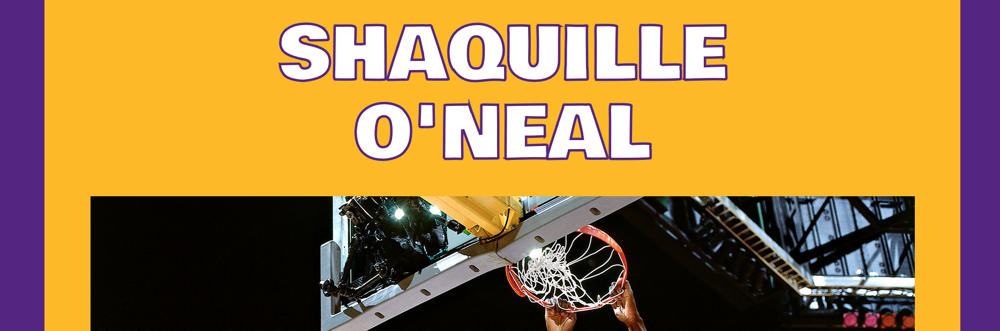

About me
Hi there, my name is Luca! I'm very glad that you found this website! Now that you're here, I would like to take the time to tell you something about myself and why I built this website. Even though I decided to study Psychology when I was 17, I have always felt a strange attraction to computers and coding. During my studies I got even more interested in topics that combine the human mind and computers e.g. Usability, Human-Computer Interaction and User Experience research. I studied those topics, but it has always felt weird to me that I never took the time to learn how to code. I figured that now that i have left the better part of my twenties behind me, it is time to change that! I'm learning how to code! I'm doing this through the different resources that are available (shout out to great online free resources like Free Code Camp and CodeCademy, but also to great books such as the Head First series). I am currently working on getting my Front-End skills up-to-date by learning about HTML5, CSS3 and Javascript. And I'm having a lot of fun doing so! This is the third website i'm coding by myself and I'm hoping to add several more in the future, so stay tuned! I'm currently thinking of expanding my Javascript skills after this and maybe even move to angular. But if you have even better ideas, send me an e-mail!
So now that you know a little bit about why I'm doing this, I'll tell you a little bit about myself: I currently live close to Leiden, together with my girlfriend. I am working a great job at a fantastic IT department at Rabobank, after finishing their Management IT Traineeship. I'm very passionate about playing basketball, or doing anything basketball related, really. I try to keep up with the NBA, and when I'm not playing basketball I'm coaching or watching a game. I go to the Gym to excercise a couple of times each week but also spend quite some hours sitting on the couch playing video games. There is nothing more relaxing than playing with friends online, or even better: Old School on the same couch.
This website marks my first real steps on the internet, and I'm hoping to make many more in the future!
Portfolio
Part of learning how to code is practicing a lot. I have built a few websites,including this one. I would like to use some space on this website to showcase a few of them.
Voor de Tuin
Voor de Tuin is my Dad's company. His old website dated from the early 2000's so I figured it was time for a new one. I really didn't understand coding very much at this point, so i went with a template and modified it. The company is small, so there is no need for a huge website. The call to action of the website is to have customers get in contact with him, so I decided to go for a simple one-page website in the colors of his company. Even though is the first website I ever built, he got some great comments from customers!

A tribute website
Part of my learning journey took me through Free Code Camp. Building the portfolio website you're currently looking at was one of the assignments, the other one was building a tribute website. I decided to let Shaq be the topic of my tribute page, since he was an awesome basketball player.
Contact me
If you ever feel like contacting me, feel free to message me on the social media mentioned on this page. I generally respond fastest to e-mail (l.kleijweg@gmail.com) or Facebook